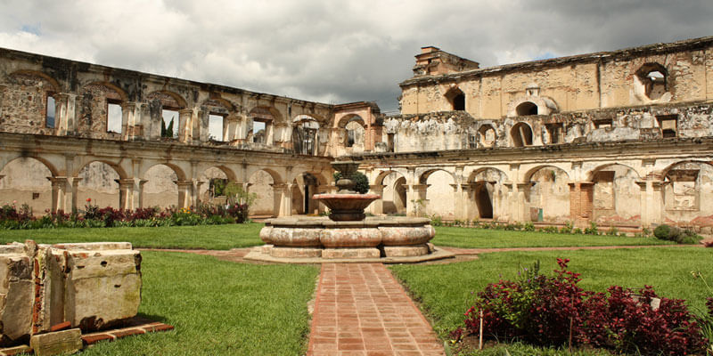
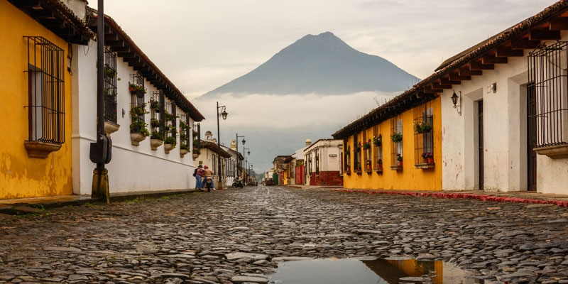

Atracciones Turísticas
La Antigua Guatemala ofrece un sinfín de lugares para visitar. Aquí te presentamos algunos de los más emblemáticos.

Arco de Santa Catalina
El símbolo más reconocido de La Antigua, con vistas al Volcán de Agua.

El Volcán de Agua
Una imponente vista que domina el paisaje de la ciudad colonial.

Ruinas de la Catedral
Explora la majestuosa arquitectura que sobrevivió a los terremotos.

Calles Empedradas
Pasea por las históricas calles que te transportan a la época colonial.
Actividades Adicionales
Además del itinerario principal, La Antigua ofrece muchas otras actividades que puedes disfrutar:
- Visitar las diversas galerías de arte y tiendas de artesanía.
- Recorrer el Cerro de la Cruz para obtener una vista panorámica de la ciudad y el Volcán de Agua.
- Explorar museos, como el del Jade.
- Disfrutar de los cafés y restaurantes, muchos de ellos con patios coloniales.